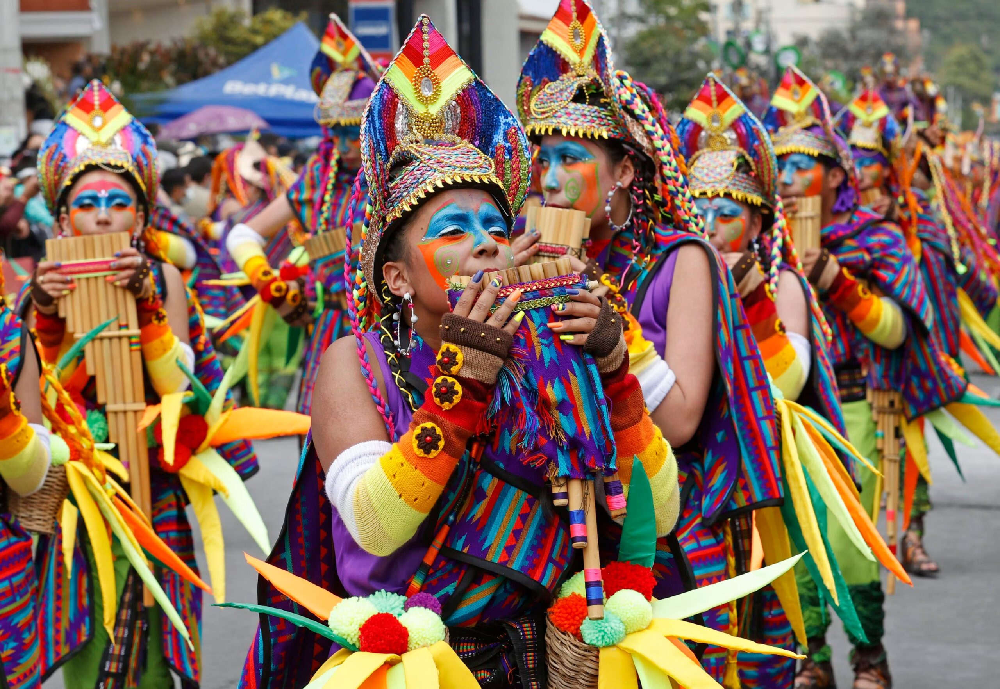
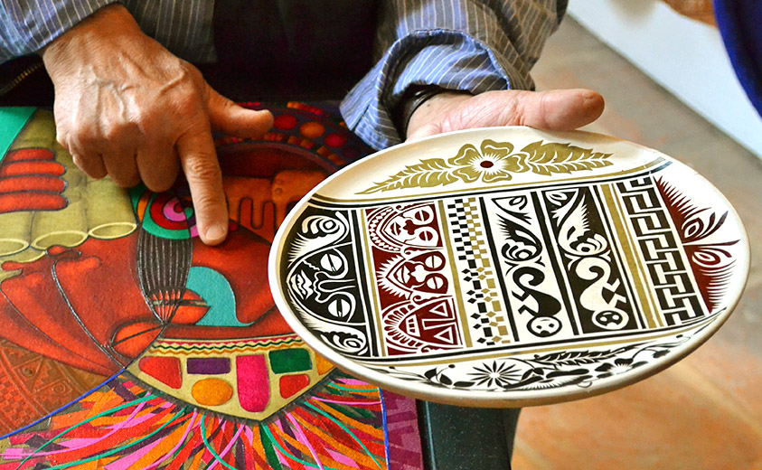
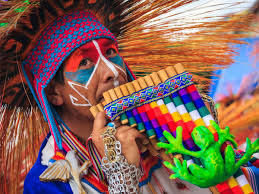
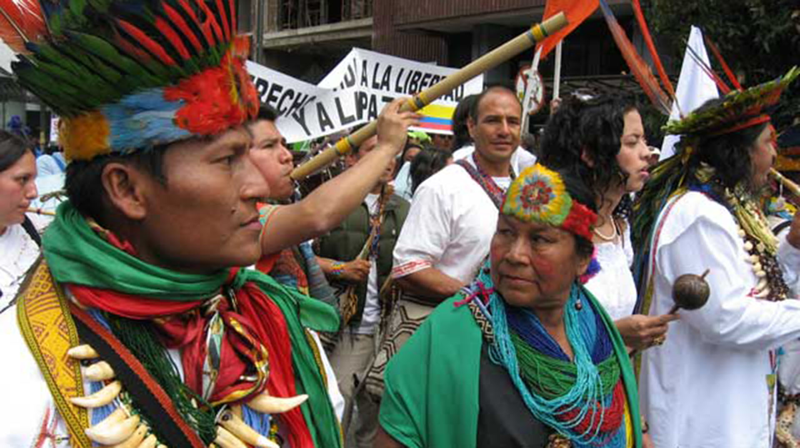
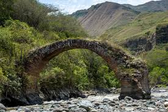
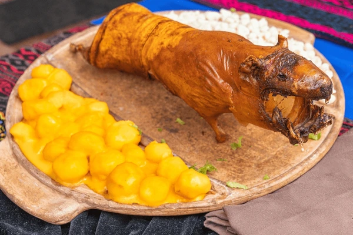
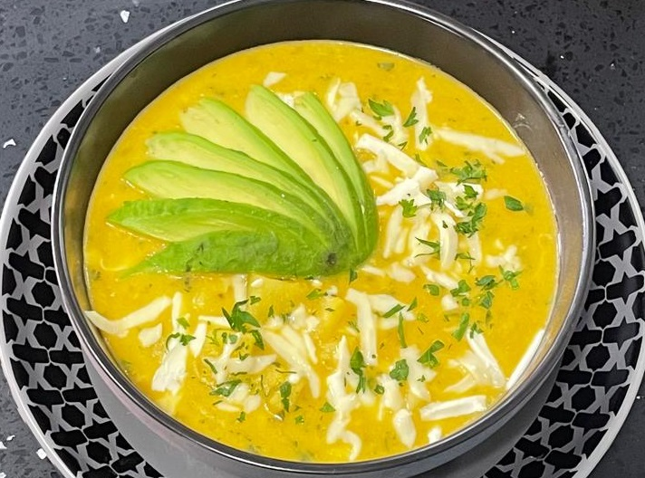
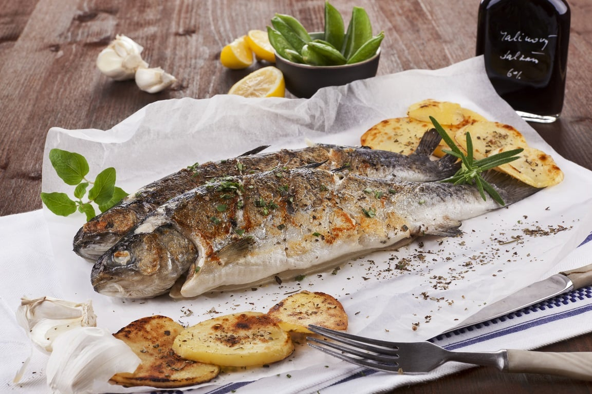

Aquí va la información sobre el departamento de Nariño.
El departamento de Nariño, ubicado en el extremo suroccidental de Colombia, limita con Ecuador y el océano Pacífico. Su capital es Pasto, conocida como la “Ciudad Sorpresa”. Se caracteriza por su gran diversidad geográfica y cultural: cuenta con montañas andinas, volcanes como el Galeras, fértiles valles, selvas y costa pacífica. Su población es multiétnica, con fuerte presencia indígena y afrodescendiente. La economía se basa en la agricultura (papa, café, caña, cacao), la pesca y el comercio fronterizo. Además, es reconocido por el Carnaval de Negros y Blancos, patrimonio cultural de la humanidad.
El Carnaval de Negros y Blancos en Pasto es la celebración más importante y está reconocido por la UNESCO como Patrimonio Cultural de la Humanidad. También se destacan las fiestas religiosas como la Semana Santa en Ipiales y Buesaco.
Son famosas las tejidos en lana, la madera tallada, las máscaras de carnaval y sobre todo el barniz de Pasto, una técnica única con resinas naturales.
Predominan los ritmos andinos (bambuco, pasillo, sanjuanito), las músicas afro del Pacífico (currulao, bunde) y fusiones modernas.
Platos típicos como el cuy asado, el hervido de frutas, el locro de papa, la trucha y la empanada de añejo.

Los pueblos pastos, quillacingas y awá mantienen prácticas ancestrales ligadas a la tierra, la medicina tradicional y el respeto por la naturaleza.
| Año | Estimación de población |
|---|---|
| 2023 | 1.719.281 |
| 2024 | 1.710.000 |
Un entorno de paz y belleza singular: esta laguna es uno de los cuerpos de agua más grandes de Colombia, rodeada por vegetación andina. En su centro se encuentra la Isla de La Corota, un santuario de flora y fauna que también conserva leyendas ancestrales.

Ubicada en el cráter del volcán Azufral, esta laguna destaca por su color verde esmeralda, producto de la presencia de azufre. Está situada a unos 3 900 msnm y su entorno ofrece paisajes llenos de misticismo.

Uno de los volcanes más activos de Colombia, situado muy cerca de Pasto. Es ideal para quienes disfrutan del senderismo y el avistamiento de aves, gracias a los ecosistemas de páramo y la diversidad biológica que alberga

Un desfiladero espectacular entre Buesaco y Arboleda, ideal para realizar actividades como kayak, piragüismo, natación en piscinas naturales y caminatas ecológicas. Además, es un sitio con valor histórico, ya que en él se libraron batallas importantes durante la independencia.
uno de los más representativos, acompañado con papas y ají.
sopa espesa hecha con papa chola, queso y hierbas.
preparadas con maíz fermentado, rellenas de papa o carne.

muy consumida en la zona andina, frita o al ajillo.
Agricultura: Es la base de la economía. Se destacan la papa, café, caña panelera, maíz, cacao, frutales andinos (mora, lulo, tomate de árbol) y en la costa el coco, palma de aceite, plátano, cacao y arroz.
Ganadería: Principalmente bovina, con producción de leche, quesos y carne.
Pesca: En la costa pacífica, Tumaco es clave por la captura de camarón, pescado y mariscos.
La capital, Pasto, concentra industrias de alimentos, lácteos, textiles, calzado y bebidas.
También es famosa la producción artesanal como el barniz de Pasto, tejidos y tallados en madera.
En Ipiales, el comercio fronterizo con Ecuador dinamiza servicios, transporte y venta de mercancías.